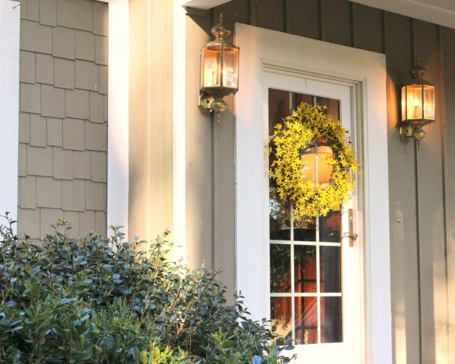
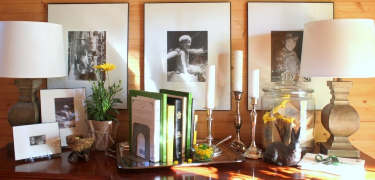

.png)
.PNG)
.PNG)
.PNG)
.PNG)
.PNG)
.JPG)
.JPG)
.PNG)
.PNG)


Just kidding! There are plenty for you to see. 🙂
Let’s start at the front door (the door that no one comes in.) I made a wreath for it using silk forsythia branches from Walmart (yes, Walmart!) and a grapevine wreath from Hobby Lobby. It was super easy. I just cut off the long part of the branches (the part with no blooms), curved the branches, and attached them to the wreath with florist’s wire. It took 6 long branches to cover it.
The foyer buffet had a bowl of jelly beans on the silver tray and bags of Easter candies (a chocolate bunny, more jelly beans, and malted milk balls) in the jar.
 A jar of plastic eggs with yellow paper shred was on the mantel for a bit of Easter decorating there.
A jar of plastic eggs with yellow paper shred was on the mantel for a bit of Easter decorating there.
The dining room had Easter cookies and a little rabbit that I purchased from Target last year.
Our centerpiece was yellow flowering plants (from Lowes) in an old basket with a few real eggs nestled in on paper shred.
The table stretched out to seat 10. I wish I had remembered to have everyone sign their name on the paper runner to keep as a memento of our Easter meal together. Darn it!
Each place setting had a jar with a chocolate Easter chick standing on green shredded paper. A few yellow jelly beans were also placed inside, and each guest’s name was written on the lid. It was a nice little take-home favor from the lunch.
My original plan had been to serve and eat outside, but with days and days of rain last week and temperatures a little on the cool side, we opted for eating inside but serving everything out on the porch.
Here’s the big table used for all the food.
I did a brunch menu for this meal. (The biscuits are not in their basket above because it took them forever to brown, and I took this photo before everyone filled their plates.) Our menu was: ham and sausage from my mother, biscuits with jellies and honey, grits, a fruit tray, deviled eggs (also from my mom), roasted asparagus, a baked French toast casserole (recipe here but I left off the pecans because not everyone in our crowd likes nuts,) a bacon -Swiss quiche (recipe here,) and a broccoli quiche (recipe here.)
My mother made two cakes for dessert – a coconut cake for my father’s upcoming birthday this week and a strawberry cake for my sister’s Saturday birthday. (I did not get photos of the cakes though. Sorry.) We were very lucky my sister was able to be here for dinner since she had an emergency appendectomy a week ago.
After everyone finished eating, the younger crowd played a new board game.
 And later they enjoyed some of their ice cream themed Easter basket treats.
And later they enjoyed some of their ice cream themed Easter basket treats.
For dinner we did it all over again.
Who says serving leftovers can’t be pretty?
As usual, in the last minute rush my poor porch chalkboard ended up being simple..just Happy Easter at lunch, but I did a second one later when I had a little more time. This one was much better. 🙂
The beverage area with juices, water, and coffee makings…
Yesterday was the first day this year I’ve felt that winter was officially gone, and spring has finally arrived. As I mentioned earlier, it had rained and rained here last week…a string of several gloomy dark days in a row, but then on Sunday, the sun began to finally shine.
How fitting for an Easter Sunday when the darkness of the cross was gone, and the light of God’s love came shining through.
The rain from the dark days washed everything away and made it fresh.
And we are so privileged beyond measure that He gives us a fresh start as well.
I hope your week is off to a fresh start. How did you spend your Easter Sunday?
We’d love to hear.


.PNG)
I really like the house, especially the interior design. The interiors are pretty and gorgeous, especially in the dining area. Thank you for sharing this.
———————————————————————–
Thank you Catherine. Glad you like our house. We live in that dining room! 🙂
Kelly
I love your house – it is charming. If we ever put new siding on our house I want to do something vertical. Currently it has the old fifties shingle siding. Would you be willing to share your house paint color?
————————————————————————
Hi Teresa!
Sure I’ll be glad to share the paint color.:) It is a Martin Senour paint called Pelham Gray…although it is not really a gray like you think of gray…it has more green in it which makes it look khaki. We have to repaint our exterior this fall, and for the first time I think we will stick with what we’ve had. We have really liked the color. Good luck with your house exterior, and thank you for your sweet compliment on ours!
Kelly
I love the wreath and chalkboard too, Katrina. My husband, son, and I spent Easter driving to Pawleys Island to spend the week with my cousin and her husband. We went to dinner at The Hot Fish Club which was yummy then spent time sitting outside listening to the waves roll in. (We had our traditional Easter dinner of ham, potato salad, green beans, deviled eggs, and bunny cake on Saturday night.) I missed church but did attend the Maundy Thursday service at a former pastor’s church in Highlands. That was an unexpected surprise….drove up to Highlands with gfs for the day, realized there was a service, and went inside with our shopping bags in hand.
———————————————————————–
Too funny! Did you get strange looks from the congregation for the shopping bags?
Kelly
[…] glad it looks like most of the country had a beautiful sunny spring day on Easter! Kelly at Talk of the House welcomed the sunshine with a homemade forsythia […]
Lovely Easter table. I cooked a turkey and all the trimmings and set a Easter themed table with lots of flowers. If it’s not Spring yet it can look like it:)!
———————————————————————–
Thank you Anita! It most certainly can LOOK like spring. I bet your meal was delicious. 🙂
Kelly
Beautiful Easter decorations and the brunch menu sounded so yummy! Have I mentioned that yellow is my favorite? Love to see all the forsythia finally begin to burst forth. Thanks for sharing your family’s holiday with us. I think we all wish we had been there. Here’s to enjoying some more spring before the heat of summer is here.
———————————————————————-
So glad you liked all the decorations Paula. I love yellow too, but it is second to my beloved red. 🙂 Yes yes, here’s to enjoying spring before the oppressive heat of summer smothers us!
Kelly
Everything looked wonderful, and I especially love the jar / place card idea! It is absolutely adorable, and now my brain is spinning with possibilities . . . shells, candy canes, candy pumpkins . . . Thanks!
——————————————————————–
Oh yes, another jar girl is on the way! LOL I absolutely love how the humble jar can be used for soooo many things. Glad you found an idea here that you can use Leslie Anne.
Kelly
Kelly, I love your blog so much! You are inspiring me to start entertaining. I get overwhelmed and don’t know where to start, what to serve, etc… I am going to start with baby steps and use your blog for great tips, tricks and recipes. 🙂
————————————————————————
Yes, you can do it, Jenn. Very smart of you to start with baby steps. We are so very casual around here, and entertaining does not have to be fancy…or really even planned. (Although I am a planner by nature.) Ordering pizza and serving it with drinks and brownies would make everyone around here happy…although none of us agree who has the best pizza. LOL I am partial to Pizza Hut, but the guys like Domino’s!
Alright that’s it…..next year I’m spending Easter Sunday at YOUR house!!! Every little detail is just beautiful. We share this quote at work and it certainly applies here “To create something exceptional, your mindset must be relentlessly focused on the smallest detail”. How I love all your details! Happy Spring!
———————————————————————-
Well just come on, Barb! I am very detail oriented…my brain just keeps on spinning when it needs to stop with the ideas…very overwhelming at times. 🙂 But I am glad that you enjoyed the details. Happy Spring to you!
Kelly
Hi Kelly
It all looks beautiful.
Just love all the lovely details in your home they really don’t build them like that here in Australia.
Kind Regards
Karen
———————————————————————-
Thank you so much Karen. I am delighted that you liked all the details of the dinner. It is always so much fun to decorate for a holiday. Thank you for reading and leaving your sweet comment!
Kelly
How beautiful, as usual, Kelly! Everything is lovely! Now I want to do Easter at my house next year! I love every idea! The Lord did give us a glorious day, didn’t He? Your yard is lovely! I love azaleas! It was a beautiful day to celebrate His resurrection! We are truly blessed!
———————————————————————
Yes, it did turn out to be a pretty day in the afternoon. Our azaleas did great this year, but you should see the big rhododendrons in the front yard! I am not a fan of pink, but those plants are amazing! I hope you get to do Easter at your house next year.
Kelly
Wow, look at how everything is blooming in the South. How wonderful that you had good weather and not the rain you were anticipating. Our grass is the only green but the bushes and trees are just now starting to show some buds. I was sorry to read in this post of your sister’s appendix. Oh what a recovery, poor thing. Your family once again was able to enjoy the “Kelly Touch”. It all looked delicious and simple enough and it always helps when you get a few dishes provided by family members, doesn’t it? I made baskets for the grandbabies of course and cellophane bag filled goodies for the adults. I handed them out after we ate. Our brunch was delicious and the weather reached almost 80. Our Midwest Easter was so enjoyable. I was able to spend the afternoon in the yard a bit. My husband transplanted a Rose of Sharon bush which was found back by the wood pile. Oh, and for the record, I crumbled. I did plant yellow pansies, daffodils and pussy willow stems in a few urns too. The garden center just made me crave those spring flowers after brunch. Toasting that Spring has finally arrived!
Debra
——————————————————————
Wow 80 degrees! I knew the garden nurseries would be too much of a temptation. 🙂 (They always are for me too!)
Kelly
Happy Easter. You house is so beautiful and your meal looked yummy, too! I spent Easter at church, eating ham and potato salad, taking a pontoon boat ride and looking at family photo albums with my husband, sons and my mom and dad. It was a beautiful day and we spent it all outside. To cap off the most special day of the year, I celebrated being three years cancer free! I have a lot to be thankful for. I know you do too.
——————————————————————–
Congratulations on your 3 year milestone! That is REALLY something to be thankful for. A pontoon boat ride sounds like it would be fun! (My husband would like it to be a canoe ride.) So glad you could enjoy the day with your family and with yummy food on a gorgeous day. 🙂
Kelly
Enjoyed a beautiful Easter service at church with breakfast. Came home and enjoyed a beautiful day in Michigan…..finally! Company came and we served beef tenderloin, roasted redskins, roasted asparagus, homemade applesauce and lemon tarts for dessert. I have the same bunny from Target. I will need to add some jute to the neck of mine…cute! Sounds like your day was lovely. Thank you for sharing all the pics. Beautiful!
———————————————————————-
Patty,I am so glad the weather finally cooperated and gave you a beautiful day. You deserved it after this winter! Just reading your menu makes me hungry!!
Kelly
Beautiful as always! I love how you style your dining room for the seasons/holidays – always lovely!
———————————————————————-
Thank you Michelle! That is so sweet of you to say that. Holidays are always fun to decorate for!
Kelly
I always love your posts about decorating for holidays and your meals, menus, and table decor!! 🙂 We always host my husband’s large family the Saturday before so we had 46 this year!! Thank goodness everyone pitches in and brings a dish or two. I even caved and we used paper plates this year. I love setting tables with dishes but it was just too big of a crowd. I colored six dozen eggs to decorate with and my daughter picked up some flowers at Trader Joes before coming in. 🙂 I was hoping to decorate with dogwood and redbud blossoms but they weren’t fully blossomed out. We were thankful for beautiful weather. Easter day we prepared a much simpler meal after church. 🙂
———————————————————————–
46 whoa!!! That’s a lot of people to feed! I so wish we had a Trader Joes somewhere close but no luck. I would have used paper plates for that large of a crowd as well. I bet all the variety of food was delicious!
Kelly
I need you to decorate for me…all of your holiday decorations and little favors are so cute. I have gotten lazy because other than Christmas, (our children and grands live in different states) we don’t get together. You should be in a magazine.
I love your beverage bar…actually I am jealous. What do you keep in all those baskets above? Just curious.
———————————————————————
Very funny! Don’t be jealous..it’s just juice and coffee. 🙂 I meant to get tomato juice too, but since I am the only one that drinks it, I decided not to include it. The baskets above hold things for decorating…lanterns, jars and things for candles, buckets, flower arranging items, and pots for plants. Very handy storage!
Kelly
Okay… I am immediately going to copy the centerpiece idea of the basket, flowers, REAL eggs. (and next Easter may also copy the breakfast brunch) The clear cookie jar with the straw – are THOSE real eggs? Easter was a whirlwind of church, picnic, and the five grandkids in the park. Loving that MY Kelly and family have been in town for an extended visit. I so enjoy that the grounds around your house are as lovely and inviting as your home. Thanks for sharing.
———————————————————————
Great! I am glad you found an idea that you could use here, Becky! The eggs in the jar are not real…those are white plastic ones from Hobby Lobby. So glad you got to enjoy visiting with your family for Easter..how fun having five grandkids must be!
Kelly
Love you wreath and chalkboard!! When the choir sang the Alleluia chorus on Sunday I got goose bumps. After church we ate chicken salad sandwiches,chips and dip and watermelon. While my family played in the yard and then watched “Saving Mr Banks” I leisurely got the Easter dinner ready. I kinda’ liked having dinner instead of lunch this year. We had 8 for a traditional Easter dinner. Then we all (well, my son decided a nap sounded like a better idea) took a long walk and oohed over all the spring yards and checked out two new shops downtown. The window displays had your name written all over them…buffalo checks and lanterns.
Church, family, friends, food…it was kinda’ a perfect day!!!! Think I will might try to get the supplies for that pretty wreath today.
——————————————————————–
Those shops DO sound like something I would have loved! So happy your day was perfect. 🙂 I am thinking about doing the Easter meal for dinner next year…it would be less hectic I think.
Kelly
Thanks for a beautiful post both in visual beauty and centering content! As many of the other comments have mentioned, I really love that you include the chalkboard posting. His triumph over death and gift of abundant life to us is amazing….I hope I never allow that truth to become routine or rote!
I have been reading your blog for awhile now and always enjoy your posts. Your home is beautiful and I love your creative style, but I keep reading for the beauty that comes from you through your words! So, I suppose this is a long wordy way to say thanks for sharing your joy with all of us!
———————————————————————
What a sweet sweet comment, Julie. Thank you so very much. I am humbled by all the nice things that you kind readers leave here and in emails I get. Thank you to all of you who take the time to read my rambling writing! You don’t know how much it truly makes my day!
Kelly
Hi Kelly: By far one of the most wonderful emails I received this morning as usual. Everything looked lovely and the food….mouth watering. I even made a mental note to duplicate that brunch next year. All of my favorites. The blackboard posting was my favorite regarding the real meaning of why we celebrate this most wonderful occasion……the Resurrection of New Life. Thank you for highlighting that! We went to church Sunday morning followed by our son and daughter-in-law coming for dinner with two grands and a dear 92 year old friend who is spry as a young chicken. What an inspiration she is! We had the traditional ham with raisin sauce, mashed potatoes/gravy, old fashioned green beans, stuffing balls, raspberry/pineapple jello salad, watergate salad and a very moist pineapple bundt cake made by my daughter-law. Needless to say, we didn’t starve. We actually needed more people to help us eat it:-)) Thank you again for this most bright, wonderful post. You are such a blessing to all your viewers!!!
——————————————————————
Your meal sounds delicious!!!! I especially love the salads (which are really desserts in disguise in my mind. LOL) It sounds like you had a lovely day Gail. Thank you so much for reading and leaving such a kind comment.
Kelly
Well Kelly, MARTHA Stewart titled her blog, the Most Perfect Easter but I have to say, I would prefer your Easter Gathering!! 🙂 I must say, I will be stealing your idea of the small Mason jar place card happies. So very cute. Loved everything about your Easter.
———————————————————————–
Thanks Arlene! You go right ahead and steal that easy jar idea.
Kelly
Kelly, everything is so pretty. Love the mason jar idea. Do you know they make edible grass now too! This is one idea I’m noting for next year, since I have a lot of jars. Your brunch looks scrumptious. My sis in law did a Italian spin on ours this year….except I added my polish touch…kolachkys & of course lamb cake.
———————————————————————-
Yes, I have seen the edible grass (but never tasted it!) I can only find it in a pale green, and I would like it in a darker color. What an interesting mix of foods for your Easter meal! But it all sounds good. 🙂
Kelly
I love your Easter photos. I always get a cup of coffee and sit down to read your posts! Your screened in porch has been the biggest inspiration for my own screened in porch. I continue to go back to your porch for another look! Thank you for all of your posts and for including us your followers in your Easter! Christ is risen! Thank you for sharing your faith as well! Blessings to you today!
——————————————————————–
I am just delighted that the porch could give you some inspiration! I just love porches. Blessings to you too Cheryl!
Kelly
Kelly, your table and meal look wonderful as always! I love your little favors/place cards….so cute! I’m bummed that I somehow missed those chocolate-looking bunnies at Target last year. I don’t know how that happened since I’m in there almost every week! I’m going to have to go looking at Walmart for forsythia. I’ve wanted a forsythia wreath for YEARS, but the branches and pre-made wreaths were always too pricey for me or else they didn’t look that great. I bought some silk daffodils at WalMart a few weeks ago and I was surprised at how nice they were.
It was a gorgeous Easter day here in Ohio….finally! We had a wonderful day celebrating the Resurrection with friends and family. Glad you had a good day too!
————————————————————————–
I hope Target sees that a lot of people would like them to bring back those bunnies. Maybe they will have more next year. I did see a doorstop with a bunny on it yesterday in the Smith Hawken section. Thought about getting it…probably should have! You sound exactly like me about the forsythia wreath…wanted one for years, but did not want to pay the high price. This one did not turn out “cheap” but it was about 1/2 the price of the one at Hobby Lobby when I finished it…so I would say that was good.
Glad that Ohio finally had a beautiful day after your very rough winter.
Kelly
Kelly, you have the most exquisite taste – what a beautiful home! I always love your beautiful handwritten chalkboard messages too, what a gift! Thank you for sharing.
——————————————————————–
Well thank YOU for reading and leaving your sweet comment Tricia! I hope your Easter was a wonderful day. 🙂
Kelly
I just took a quiet walk around enjoying every little area. I especially loved the buffet table, the lovely spread and the colors were just right. Great menu! What joy and peace we have in the Risen Lord! Thank you, Kelly, for allowing us to be “unseen guests!”:)
——————————————————————–
Wish I could just invite all of you over for a lunch! How fun that would be (and I know if everyone brought their favorite dish we would have an amazingly delicious spread. YUM!)
Kelly
Kelly,
I love all your special touches, as always! I have those same rabbits from Target sitting on top of my piano–they just make me smile. The hymn that you wrote on the chalkboard also makes me smile. It just isn’t Easter without hearing that beautiful song.
We had a very simple brunch here, and in the afternoon the National Park Service allowed visitors to go to the top of the monument free of charge. I of course chose to DRIVE to the top to take pictures, while others chose to hike up the trail. The weather was absolutely gorgeous, and it was breathtaking to see the entire valley below.
I loved your message about the fresh start given to all of us. I’d better be getting to bed so I can have a fresh start in the morning. My students take their state reading assessments tomorrow, and I need all the energy I can possibly get!
———————————————————————–
What a way to spend an Easter Sunday! (I would have driven too. 🙂 ) I hope your students did well on their test. Testing week is such a strange week…always so quiet in the building!
Kelly
Kelly,
You do the best tables and seasonal decorations. I loved the little jars of jelly beans with the little foil wrapped chicks. How creative. Your home always looks so charming and the white azalea (?) out front in full bloom is complimentary to the trim on your house. Thanks for the great ideas for next Easter.
We enjoyed good weather and had our appetizers outdoors before coming inside for lunch. It was so much fun.
xo,
Karen
———————————————————————
You are too kind. So happy you liked it all! The jars were a fun thing to do (although watching my daughter “bite the head off” of the chick was kind of creepy. LOL) Our azaleas must have loved all the rain and cold we had this winter since they have REALLY bloomed this year, and the flowers have stayed on longer than usual. Normally we have had heat which probably makes them fall off sooner. Having the appetizers outside sounds like a fun thing to do if the weather is warm enough for it.
Kelly
Your table is lovely Kelly. I love the yellow touches everywhere. I have books here and there in my house and totally copied you by changing out my usual red books for yellow and white. What a difference a little change can make.
Thanks for the inspiration.
———————————————————————
Thank you Sue, but I think I went a little overboard with all the yellow. It’s everywhere! Good for you decorating with books! It is a little change, but you are right. It does make a difference. Glad you can find some inspiration here. 🙂
Kelly
Hi Kelly, we had brunch too! Just our daughter and SIL so 4 of us. But we had alot of the same food as you. Come on over and you can see my table and food too:):) SO glad you had such a nice Easter with family. XO
———————————————————————–
Thanks for visiting here and leaving your kind words, Pinky! I am glad you had a nice Easter as well. Your brunch looked wonderful!
Kelly
Kelly, Looks like you had a beautiful day. I love all the little touches around your home! The weather was lovely here. We had an awesome Easter dinner at my sister’s — as always, thankful for Christ’s sacrifice on the cross. He is RISEN!
———————————————————————-
Yes, we did have a beautiful day, Sally. I am happy you liked all the touches for the season around here. Thank you so much for reading and leaving your comment!
Kelly
Dear Kelly,
Beautiful! Just. Beautiful!
I needed to see all of this before Easter so that I could have been inspired to be a copycat. We went out for Easter Sunday brunch with family coming from all over Alberta. Dinner was not a traditional Easter dinner, but a delicious Balsamic Chicken dish my brother made for us with broccoli with lemon and butter and some nice Basmati rice. All our lives he and I have had a bit of a competition when it comes to cooking. This time he won. Hands down.
Thanks for sharing your beautiful Easter with us.
All the best
Cath
————————————————————————
YUMMY! That chicken dish sounds so delicious! Sorry I couldn’t post it all before Easter. Just pin some of the images on Pinterest and you can be a copycat next year.:)
Glad you enjoyed the post!
Kelly
Everything is beautiful as always!!! I love the beautiful yellow flowers you used as your centerpiece. Happy Birthday to your father and sister. I hope that your sister is recovering very well after her surgery. We spent our Easter driving home from Charlotte, NC. We spent the week there for the 50th Anniversary of the Mustang. Weather wasn’t so nice so it made it hard to enjoy the week for the men but I am sure they muffled thru it. The girls shopped, some at the malls, some at The Depot at Gibson Mill. OMG is that place big!!! I bought a few things. I could go back for a few more. We will celebrate Easter this weekend with my daughter and grandchildren doing the Easter egg hunt and Easter Bunny thing. I can’t wait. I think I might have to borrow your centerpiece idea. I hope you don’t mind. Thanks for sharing your day. You always have the best ideas. 🙂
———————————————————————–
Thank you Cindy! Sounds like you had a fun weekend even if the weather did not cooperate. I hope your delayed Easter weekend is a good one for you and your family. Please do borrow any idea you find here! That is why I share. 🙂
Kelly